Disclamer: If you are visiting here because you want to see the cool art and don't care about the physics (which is a shame, the physics is cool) then the simulation can be found here and is also linked in the discussion at the bottom.
If we give the mass some initial velocity $\vec{v_o}$, and an initial position $\vec{r_o}$, we can then solve for the motion of $m_1$ using Lagrangian mechanics. This motion will produce a pattern due to the leaking ink hitting the plane $A$. I neglected the velocity of the ink leaving the bottle for simplicity sake, and took the projection of the position of $m_1$ onto plane A to be the position where the ink falls. Air friction was also neglected.
Now, this will form a pretty boring picture of concentric elipses on plane $A$. To make things more interesing I tied plane $A$ to a the top side of a second pendulum of length $l_2$ to the the pivot point $O$ with mass $m_2$ on one end, and lenght $l_3$ from $O$ to point $P$ which is the origin of plane $A$ as shown in figure 3. The mass of plane $A$ is assumed to be zero here, which you could image if it were a piece of paper. Also $A$ is assumed to be kept parallel to the xy-plane at all time, one could enforce this with a ball joint and some control. I will call this pendulum system, "System 2".

Start by noting there are 2 degrees of freedom ($s=2$), I will pick my genrealized coordinates to be $\mathbf{q}=(\theta, \phi)$, note that because the results from System 1 will be the same as that from System 2 I will not use the subscripted angles. Writing the cartesion position in terms of $\mathbf{q}$ we have (where the dot above implies the time derivative) 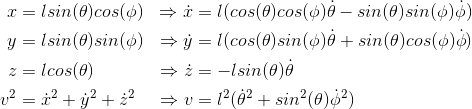 The potential energy is found to be $U = -mglcos(\theta)$, thus we find the Lagrangian to be 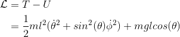 The Euler-Lagrange (EL) equations yeild 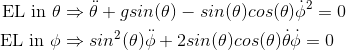 Noting that the Lagrangian is indepent of $t$ and $\phi$ we find that energy and angular momentum in the $\phi$ direction are conserved 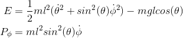 In the simulation I solve this system of ODE's numerically, finding $\theta(t)$ and $\phi(t)$. From here $(x,y,z)$ can easily be found using the first 3 equations in the solution section.
Now it is time to consider System 2, as mentioned the physics will behave exactly as calculated for System 1.
System 2 will be accounted for by the translation of plane $A$ in the xy-direction.
Here the $z$ translation doesn't need to be considered as I am taking the position of the falling ink to be the projection onto the $A$ plane (neglecting the velocity of the ink leaving the bottle).
The translation of point $P$ (the origin of plane $A$) in the cordinate system for System 1 (and System 2) is
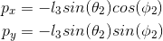
By applying this transformation to the position of $m_1$ in from System 1 we can find the position where the ink will fall on plane $A$ which has $P$ as its origin.
Thus the position of the ink drop on plane $A$ relative to origin $P$ will be
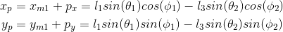
Where $x_p$ and $y_p$ are defined as drawn in figure 4.
To solve this problem the first step is to find the numerical solutions to the ODE's from the EL equations. From the conservation of angular momentum in $\phi$ we can note that 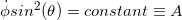 which allows decoupling of the ODE's to give a single ODE 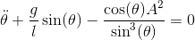 We can then discretize this ODE to give 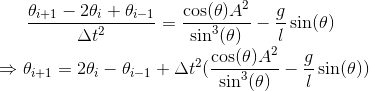 where $\Delta{t}$ is a small time step. So if we know two initial positions, we can find all further positions. $\theta_0 = \theta(0)$ will be given as an inital condition, which just leaves the task to find $\theta_1 = \theta(\Deltat)$. This can be found by taking the 2nd order taylor expansion about $\theta_{0}$ 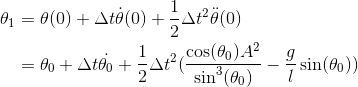 Manipulating and discritizing gives 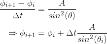 This means we now have the equations that will allows a numerical solution. Notice that in these equations there is singularity about $\theta = 0$, this occurs due to a centrifugal barrier and is a product of solving these in spherical coordinates. There is more complex numerical methods to elimate this singularity but they are beyond the scope of this project. These equations will accuratly represent the system as long as $\theta$ is not to small, which is sufficent for the art I am trying to produce!
To solve these equations we will need to be provided 4 initial conditions
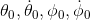.
I want to demonstrate how the plots look in 3D and the projection onto a 2D surface which would be the art produced if A is held fixed.
To do so I implemented this algorithm and plotted for a few different initial conditions in Matlab, results can be seen in Figure 5. You can find the code TODO
Now all that is left is to add in System 2, thankfully we can use the exact same discretized equations to solve for $\theta_2, \phi_2$ which allow us to solve for $(p_x, p_y)$ and what we really need $(x_p, y_p)$ which are the positins of the ink within plane A.
Below are a few of the nice results that I produced
Once I proved the concept worked in Matlab, I moved it over to a javascript appliation to be run in the browser so it is interactive and easily accessible. I wanted a realivily clean and intuitive interface so I cut back the user specified values to just the angular velocity initial conditions, and the drawing time. The angular velocity initial condiiton were found (after some testing in Matlab) to have the biggest impact on the resulting art produced. The simulation as seen in Figure 8, can be found here (it is also linked in the disclaimer at the top, and in the discussion).
Within the simulation I added 2 different animations which the user can toggle on and off:
- Animation in time: This allows the user to visualize how the painting gets made from the start to end by drawing it infront of their eyes. The user can change how far along the painting is with the time slider.
- Harmonics animation: This animation runs through some values of initial conditions, slowing down around some harmonics that produce a cool painting. This should give the user an intuitive feel of how they can use the simulation to create their own art. Note that the sliders are also animated in time so the user can see exactly what paramenters are being changed!
Note that it can be a bit tricky to find nice harmonics (a lot of the time it just looks like scribbbles), but just keep chaning the initial conditions and they will appear. If all else fails run the harmonic animation and stop it when you hit something you like.
Most importantly please have fun and enjoy producing cool art! This is a really great way for someone who is not typically great at art to be an artist (this is the category I fall within),
If interested, you can checkout the code behind the simulation on my github TODO.
When I first set out to solve this problem I was not sure if I was actually going to be able to produce a harmonograph, but was pleasently surprised!
A traditional harmonograph drawing gets it beauty from the damping in the pendulum motion due to air resistance, where in my case it was neglected. Also in a tradition harmongraph, there are 3 pendulums; a planar pendulum in the xz plane, another in the yz plane, and the last is a spherical pendulum set in conical motion moving the canvas. This means it is easy to tune frequencies in the xz and yz direction independtly, where as in my harmonograph this isn't as easy due to the coupled ODE's that arrise. This makes it slightly more difficult to find initial conditions that produce a nice result, which means I get more of the "art" found in figure 9 than a typical haramongraph would, but all things considerd it turned out really well!
If you just can't get enough go check out this simulation running in the background of my landing page.
Enjoy :)